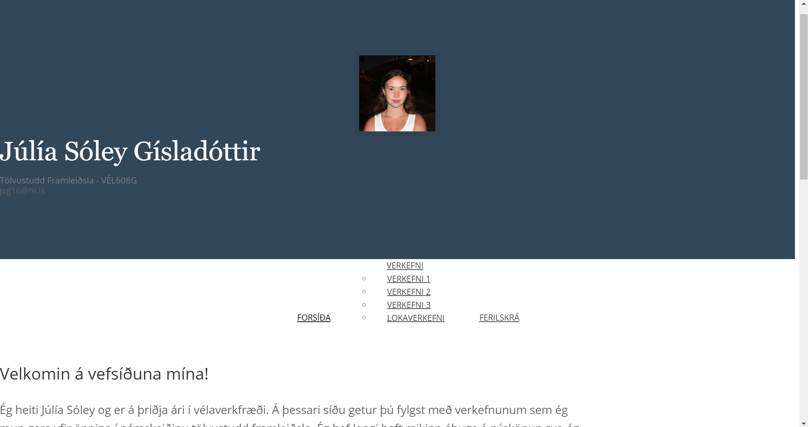
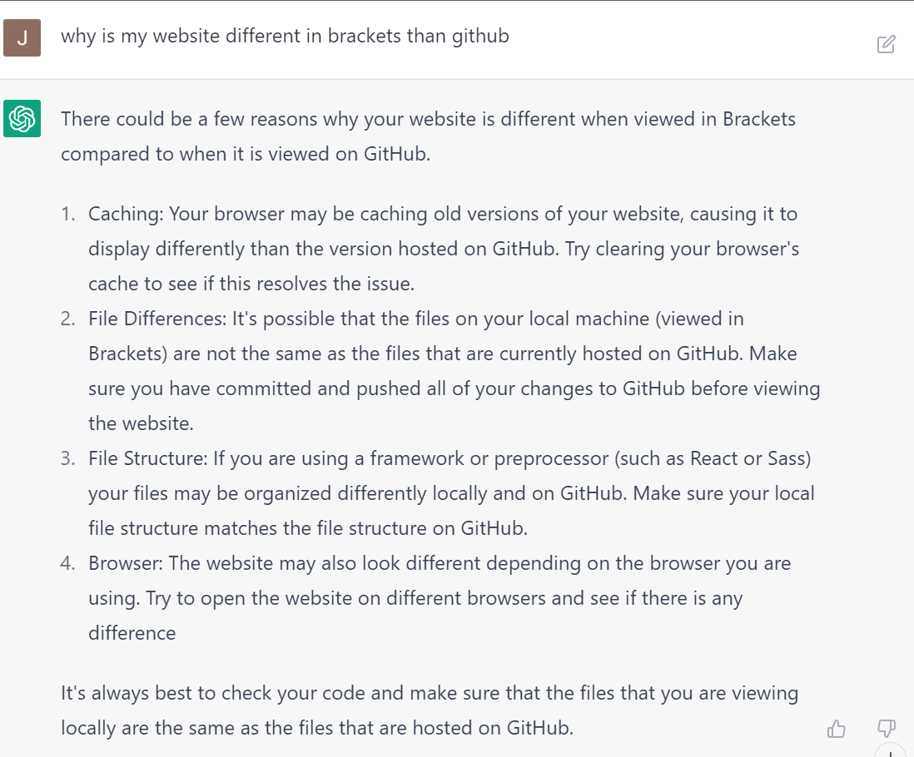
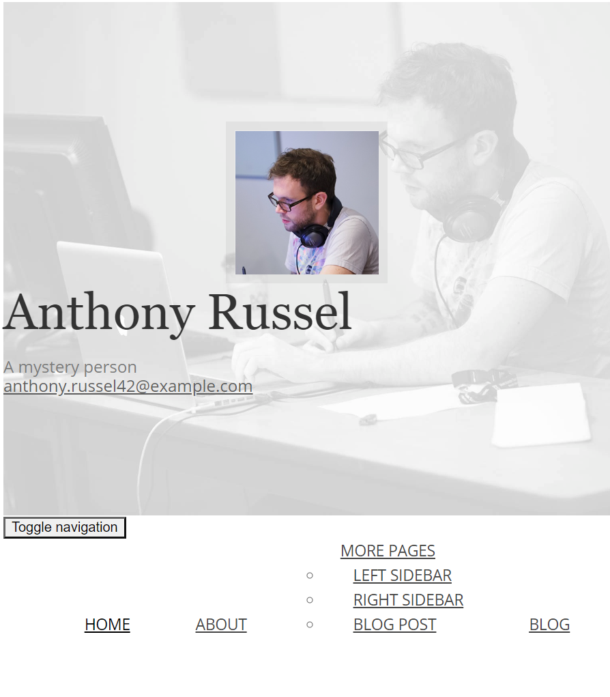
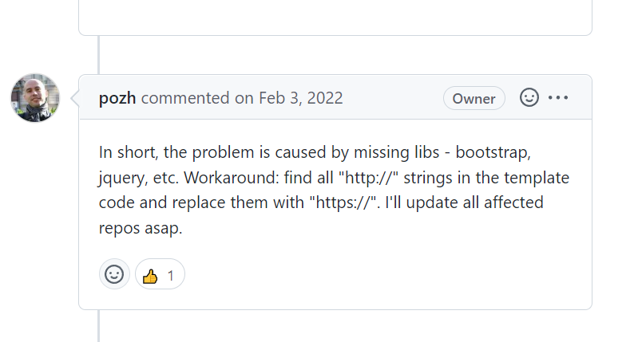

3D prentun
Hugmynd og hönnun
Í þessu verkefni áttum við að hanna módel fyrir 3D prentun og prenta út hlut. Ég var að fara að kynna vélaverkfræðina á Háskóladeginum svo ég ákvað að mér fannst skemmtileg leið til að sýna smá hvað við lærum í vélaverkfræðinni að prenta út nafnspjald í 3D. Mig langaði að hafa þetta svoldið skemmtilegt svo ég hannaði nafnið mitt með skemmtilegum bubbly stöfum í FUSION 360. Ég lét nafnspjaldið vera 5x2,5 cm og lét spjaldið ná 1 cm út (botn 0,5 og nafn 0,5 cm).
Prentun
Eftir að ég var orðin sátt með módelið var verkefnið vistað sem 3MF skrá og sett á USB kubb. Næst var skráin opnuð með forritinu Cura og módelið slice-að. Notað var blátt generic PLA filament og þurfti vekefnið engar stoðir. Prentunin tók 47 mínútur og kom nafnspjaldið vel út.
3D
Skref 2: Vefsíða smíðuð
Eftir að sniðmót var ákveðið byrjaði ég að fikta. Ég hef aldrei notað HTML áður svo ég byrjaði á síðu sem ég ætlaði ekki að nota og fór að leika mér að því að eyða og bæta við hlutum til að sjá hvað myndi gerast. Þegar ég var komin með smá skilning á leikreglum forritsins byrjaði ég á vefsíðunni. Síðan https://www.w3schools.com/ kenndi mér að breyta stíl vefsíðunnar t.d bakgrunnslit og leturgerðum. Þegar ég var orðin sátt með vefsíðuna var komið að því að setja hana upp.
Skref 3: Vefsíðan í loftið
Þetta skref reyndist mun erfiðara en ég hafði áætlað. Ég fylgdi kennslumyndböndum námskeiðisins og bjó til repository og færði inn verkefnið mitt með gitBash. Þegar komið var að því að skoða vefsíðuna kom í ljós að vefsíðan kom ekki eins út og hún hafði gert í Brackets

Ég leytaði á veraldvefnum "why is my website different when uploaded to github than in Brackets". Ég fann ekkert sem mér fannst ástæða til að prófa. Næst fór ég á síðuna chat.openai.com sem er síða sem notar gervigreind til þess að svara spurningum. þar fékk ég lista af hlutum sem gætu verið að.

Ég byrjaði á því að breyta um browser án árangurs. Næst hafði ég áhyggjur af því að ég hefði fært skrárnar inn vitlaust. Svo ég bjó til nýtt repository og fylgdi þessu myndbandi. Aftur var engin breyting. Næst ákvað ég að setja sjálft sniðmótið á github til að sjá hvort þetta væri galli í sniðmótinu eða hvort ég hefði gert eitthvað vitlaust.

Kom í ljós að vandamálið var tengt sniðmótinu. Eftir smá leit fann ég vandamálið á Þessari síðu

Þá fór ég aftur í Brackets og breytti öllum "http://" í "https://" og loks var síðan tilbúin. hér má nálgast repository-ið